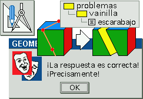

|
Geometria
a ofrece una interfaz gráfica para crear y resolver problemas de geometría en
3D. Se puede emplear y distribuir ampliamente porque ¡es libre! Se ejecuta
en el navegador o explorador sin necesidad de conexión.
|
|
Invitamos a probar estas nuevas alternativas de la
versión-web 4.0:
 |
|
¿Dudas sobre el modo de dar inicio a Geometria?
¿Dificultades para encontrar lo necesario? ¿Sugerencias sobre nuevas posibilidades
que pudiera ofrecer Geometria?
¿Algún comentario sobre las facilidades que ya brinda
Geometria?
|
|
Con
Geometria,
se puede trazar y medir segmentos y ángulos, calcular tanto áreas como volúmenes
y transformar recortar y unir figuras. Las figuras se pueden girar y rotar con
la facilidad con que lo haríamos con nuestras propias manos.
|
|
Geometria
incluye un almacén o repositorio de figuras y muestras de problemas y soluciones
que según su dificultad, se clasifican en cuatro categorías.
Los rótulos y las variables ofrecen un campo conveniente respecto de abstracciones,
coordenadas y medidas numéricas. Las variables se usan en cálculos y se incluyen
en las referencias de construcciones y bocetos.
La versión Java 3.2 se ha suspendido y ya no se la respalda.
|
|
Con todo gusto revisaremos propuestas para publicar problemas propios, soluciones
y figuras, ampliando el almacén de repositorio.
|